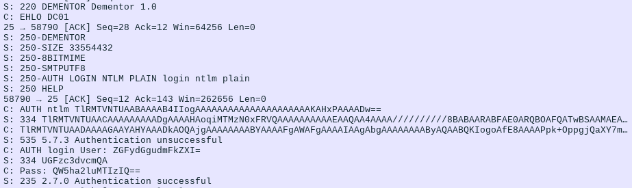

The SMTP/POP3/IMAP server in Dementor supports a mechanism to attempt a “downgrade” of an authentication attempt
initiated by a target host. This behavior is controlled by the SMTP/IMAP/POP3.Server.Downgrade setting.
Warning
This attack specifically targets the SmtpClient
component of the .NET Core platform. Although DE0005 marks this component
as deprecated and advises against its use, this example demonstrates how Dementor can be configured to simulate various attack scenarios.
Tip
This attack also works against MimeKit due to their design choice when performing
authentication. And most importantly, this attack also works for POP3 and IMAP.
First, let’s understand how a simple email can be sent using PowerShell on Windows. Some tutorials recommend the standard SmtpClient,
which, while deprecated, is still functional in many environments. Here’s a typical example:
$EmailTo="darth.vader@contoso.local"$EmailFrom="luke@contoso.local"$Subject="Revelation"$Body="I am your father"$Server="MAILSRV"$ServerPort=22$Username="darth.vader"$Password="Anakin123!"$Message=New-ObjectSystem.Net.Mail.MailMessage($EmailFrom,$EmailTo,$Subject,$Body)$Client=New-ObjectSystem.Net.Mail.SmtpClient($Server,$ServerPort)$Client.UseDefaultCredentials=$false$Client.Credentials=New-ObjectSystem.Net.NetworkCredential($Username,$Password)$Client.Send($Message)
By default, the client won’t require secure connections unless EnableSsl is explicitly set.
If NTLM authentication is available, it will be used but the client may fall back to weaker mechanisms such as
PLAIN or LOGIN if the server offers them or NTLM authentication wasn’t successful.
Tricking SmtpClient into Revealing Cleartext Passwords¶
You can exploit this fallback behavior by configuring Dementor’s SMTP server to either accept only plain-text authentication
or simulate a failure after NTLM auth to force the client to downgrade.
Accept only plain authentication (not recommended):
In environments where clients try NTLM first, you can simulate a failed NTLM attempt and force the client to
retry using plain-text credentials.
Note
This only works if the client has the cleartext password available locally. If the credentials are
provided as NTLM hashes or tokens, the downgrade will fail.
Dementor sends the following response to trigger the fallback:
5355.7.3Authenticationunsuccessful
The default Windows SMTP client will retry using cleartext credentials — if they are present.

The client reattempts authentication with cleartext credentials after an NTLM failure.¶
Going Further: Retrieving Credentials from MimeKit¶
The documentation for MimeKit explains that when authenticating via
the MailService.Authenticate
method, supported SASL mechanisms will influence how credentials are handled. However, this attack
will not work if the client specifies a SASL mechanism directly.
If the server supports one or more SASL authentication mechanisms, then the SASL mechanisms that both the client and server
support (not including any OAUTH mechanisms) are tried in order of greatest security to weakest security. Once a SASL
authentication mechanism is found that both client and server support, the credentials are used to authenticate.
Setting up a small program usually costs hours of installing stuff. Once complete, the following script
demonstrates how this behavior is triggered from the client side: